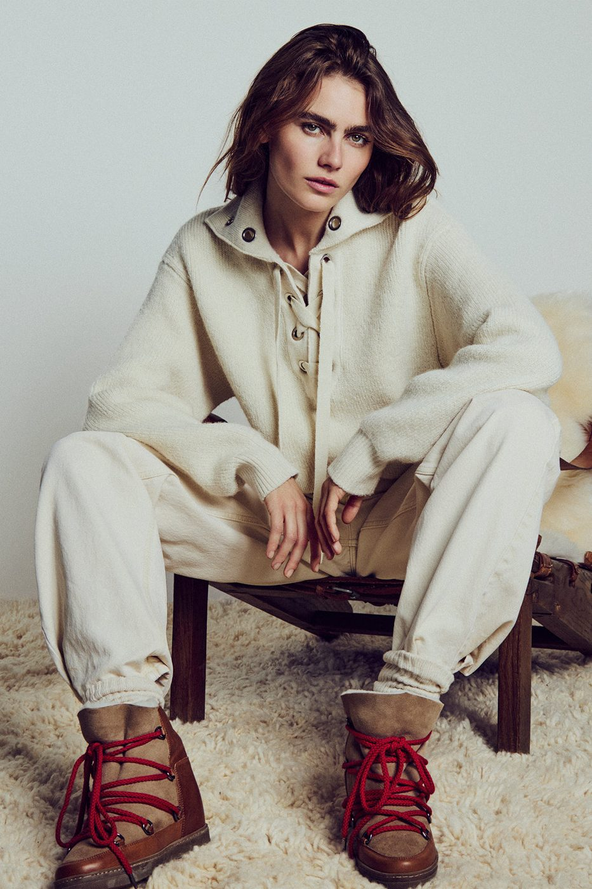
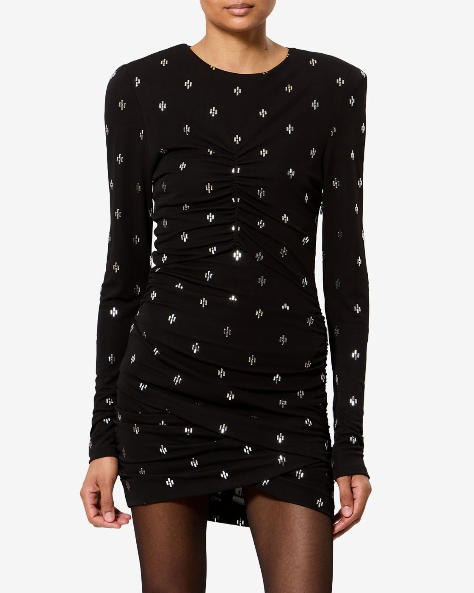
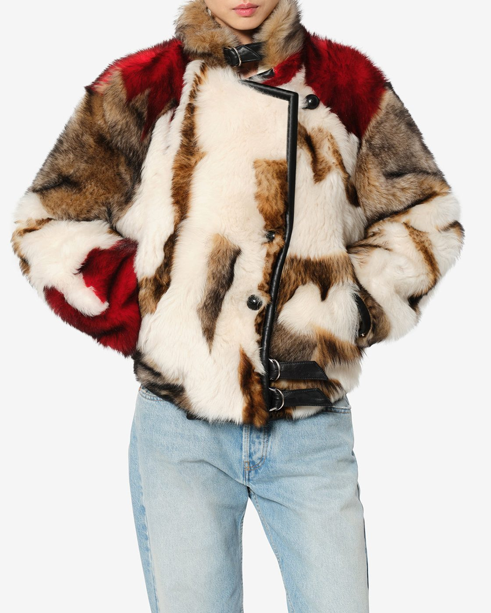
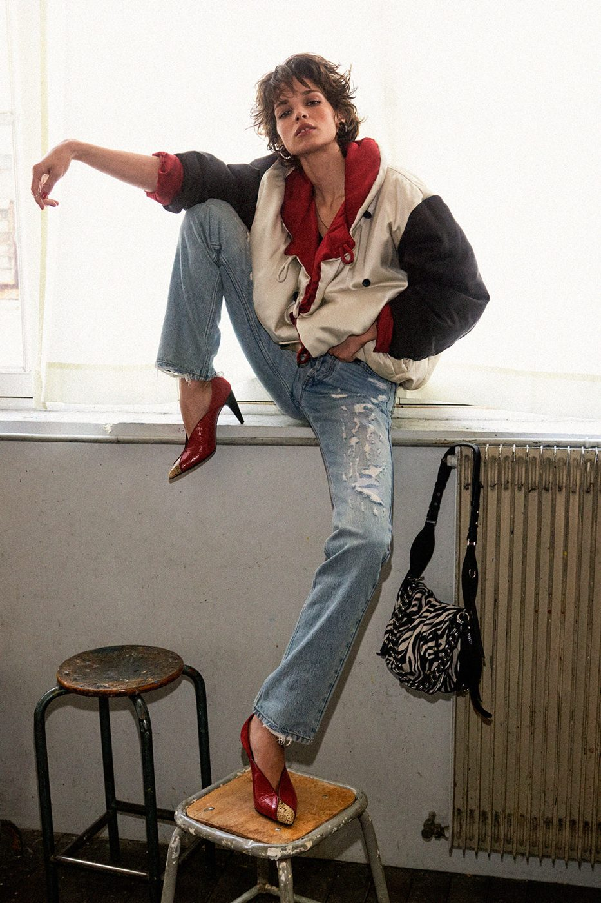
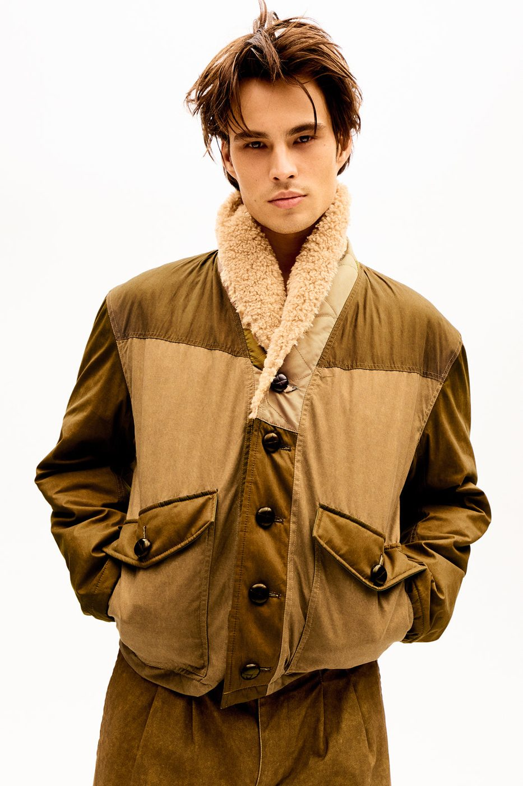
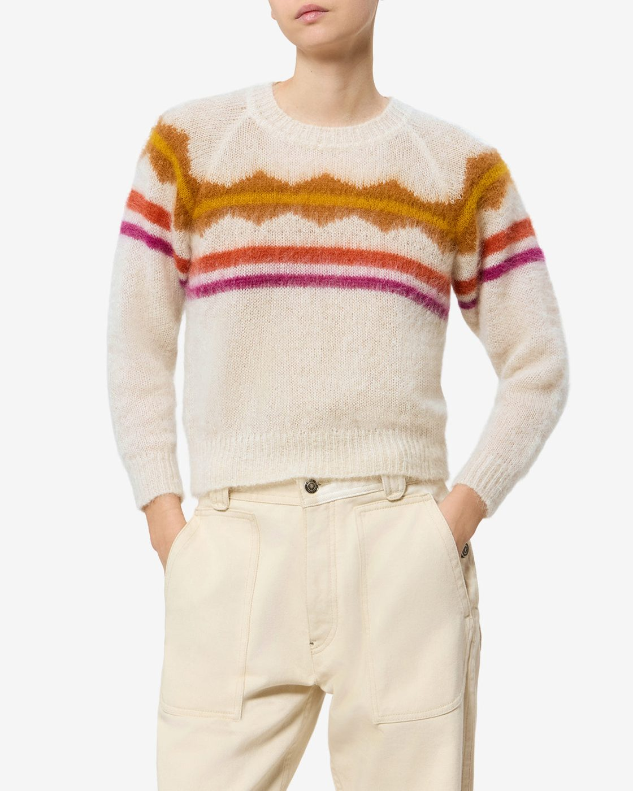
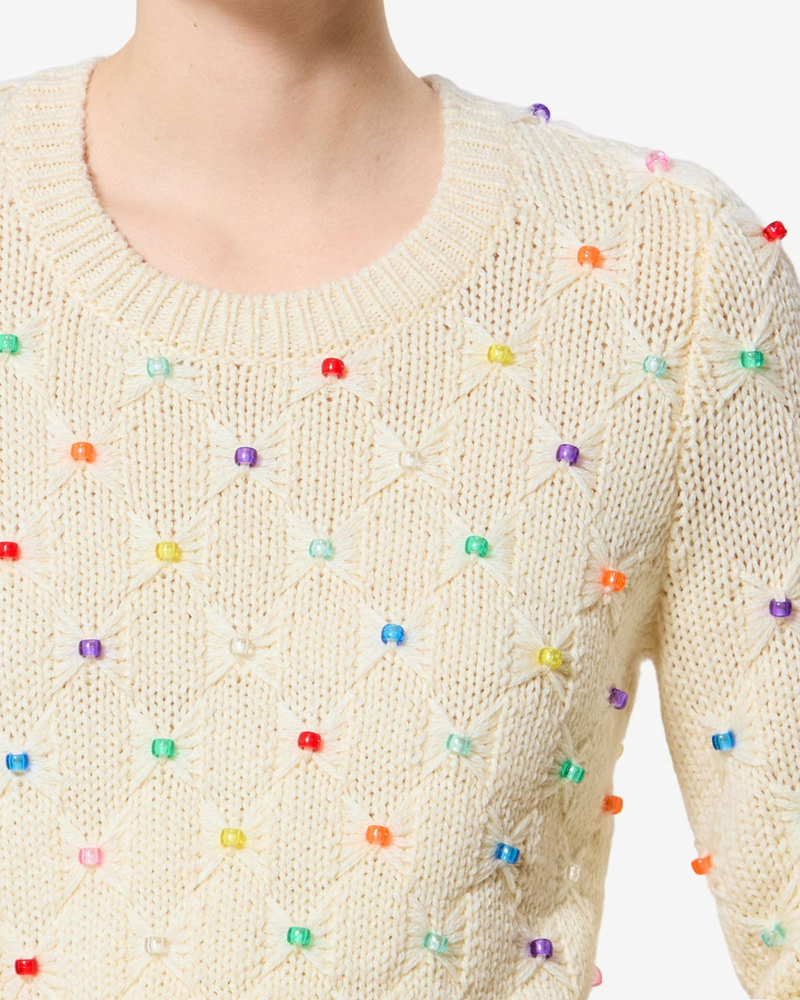

Isabel Marant
Company study · 2026-11-20
Relaxed and lived-in. Isabel Marant pairs soft cream knits and shearling with worn denim, red boots and a loose, sat-on-the-radiator ease. Color stays warm and earthy, cream, khaki, brown and black, with one hot red or a stripe of mustard and pink. Detail does the talking: pompom dots, crystal studs, patchwork pelts.


(01)

(02)

(03)

(04)

(05)

(06)

(07)Palette · measured from images
#F5F5F5#191111#E4D3BF#BEC8C8#5B4E44#7B4D25Visual themes
- Lived-in ease
- Key motifs: sitting on stools and radiators, loose sets, jeans and boots. Sub motifs: window light, scarves, a direct sideways look.
- Soft knits with a pop
- Key motifs: cream cable knits, wavy mustard and pink stripes, pompom dots. Sub motifs: mohair haze, rolled cuffs.
- Pelts and patchwork
- Key motifs: shearling jackets in cream, brown and red. Sub motifs: black leather piping, wide collars.
- Studs and sparkle
- Key motifs: crystal-studded black dress, shoulder structure. Sub motifs: sheer tights, a gathered hip.
Color palette
- Studio white #f5f5f5
- The pale ground of the product shots and window light.
- Soft black #191111
- The studded dress, boots and leather piping.
- Cream #e4d3bf
- Knit sets, sweaters and shearling.
- Mist gray #bec8c8
- Studio backdrops and shadowed wall.
- Espresso #5b4e44
- Brown shearling, wood stools and boots.
- Sand taupe #928477
- Khaki bomber, warm denim shadow and pelt.
Visual elements
- Photography
- Campaign images in natural window light or a bright studio, the model looking away or sideways; products on a pale gray ground, shown flat, on the body and as a close detail.
- Layout habits
- The home page leads with menu tiles in portrait and landscape; the navigation reads Woman, Shoes, Bags, Accessories, Man, Maison and Journal.
Notable products
- Shearling jacket
- Patchwork pelt in cream, brown and red.
- Striped mohair sweater
- Cream ground with mustard and pink bands.
- Pompom knit
- Cream cable knit with multicolor dots.
Method and limits
- Palette basis
- the seven board images; k-means in Lab, six clusters kept; the pale studio ground of the product shots is part of the measurement; the sixth swatch, Cognac, is a warm brown taken from the leather and knit tones in the images, in place of a near-gray cluster
- Limits
- Pages read 2026-11-20, plain HTTP fetch, no login: https://us.isabelmarant.com/ , the Winter 2026 campaign journal page and the dresses, knitwear and coats collections. Product shots were enlarged by asking the site CDN for width 1400 of the same file. Fabric content and construction are not stated here; colors are measured from lit photographs.
Credits and licenses
(01) Cream knit set worn with red lace-up wedge shoes, seated on a wood stool. Isabel Marant. Brand image, study use. source
(02) Long-sleeve black mini dress studded with small crystals, gathered at the hip. Isabel Marant. Brand image, study use. source
(03) Patchwork shearling jacket in cream, brown and red with black leather piping. Isabel Marant. Brand image, study use. source
(04) Model in jeans, red boots and a red scarf, perched on a radiator by a window. Isabel Marant. Brand image, study use. source
(05) Menswear: a two-tone khaki and brown bomber with a cream scarf collar. Isabel Marant. Brand image, study use. source
(06) Cream sweater with mustard wavy and pink stripes across the chest. Isabel Marant. Brand image, study use. source
(07) Close-up of a cream cable knit with small multicolor pompom dots. Isabel Marant. Brand image, study use. source